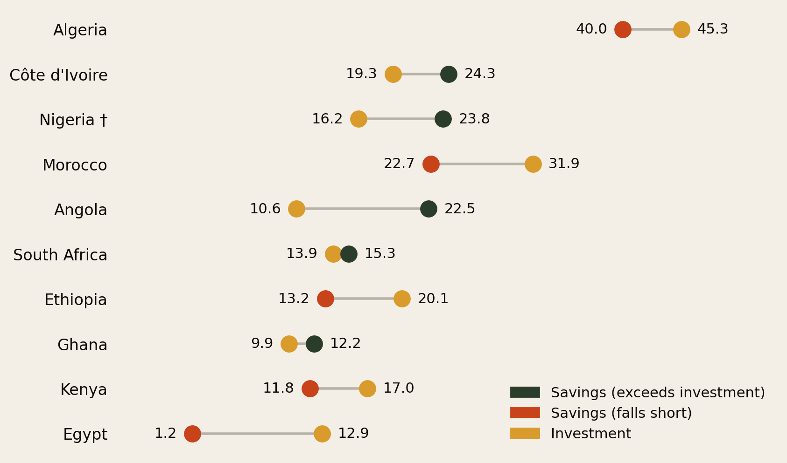
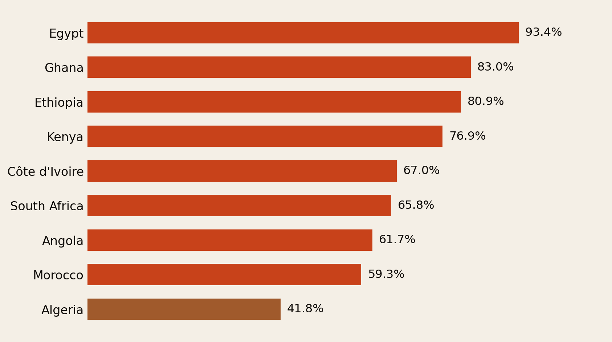
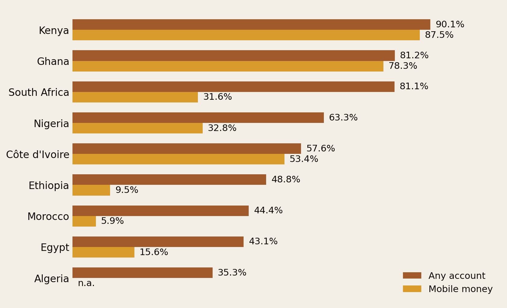
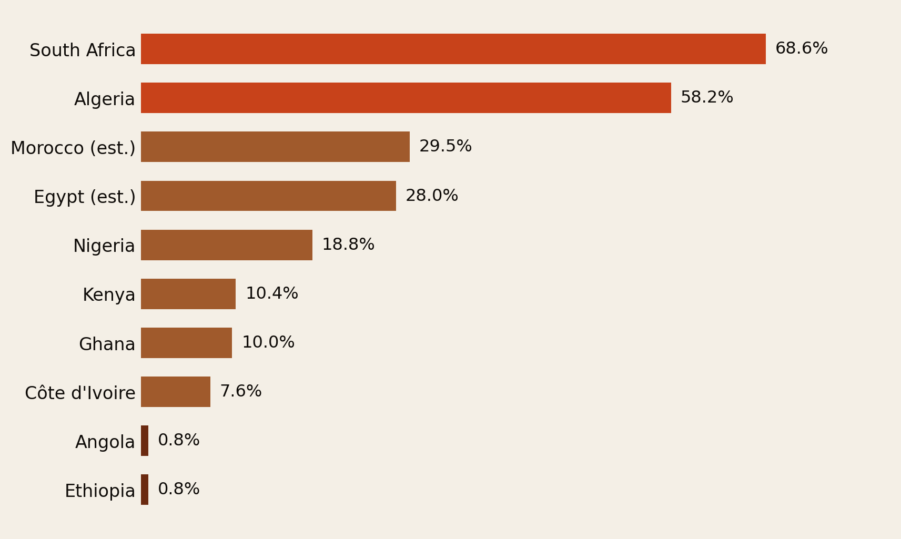
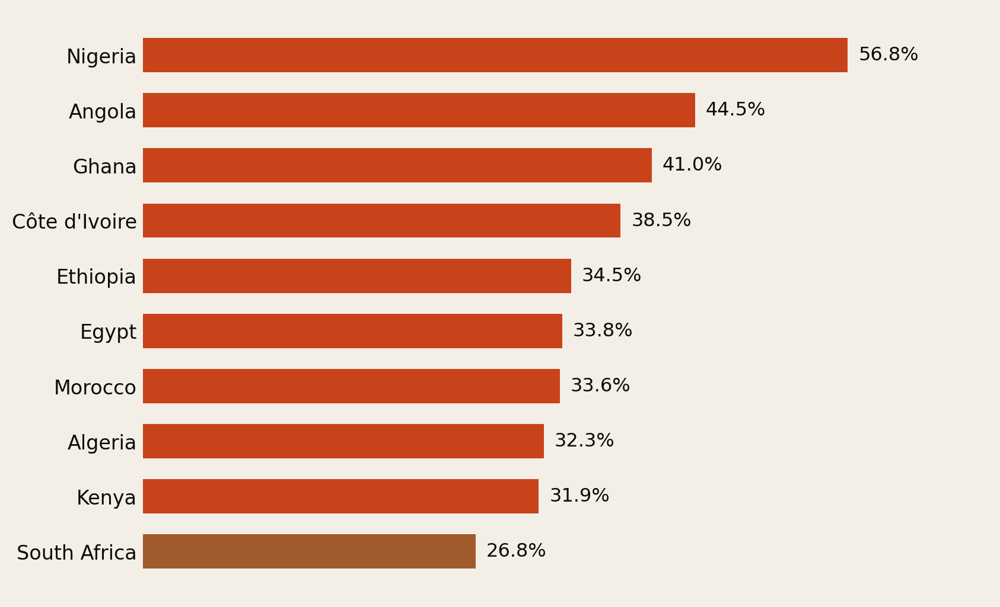
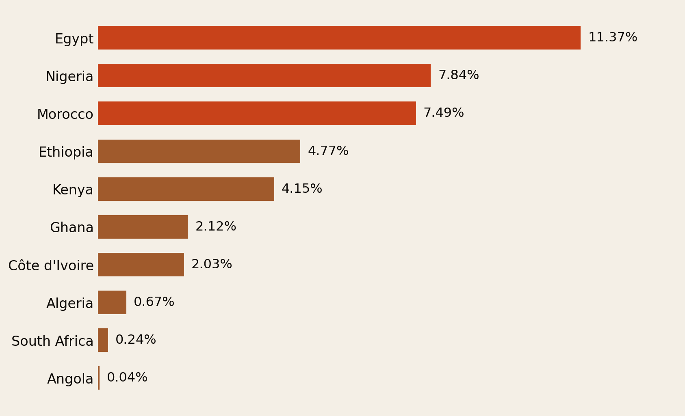
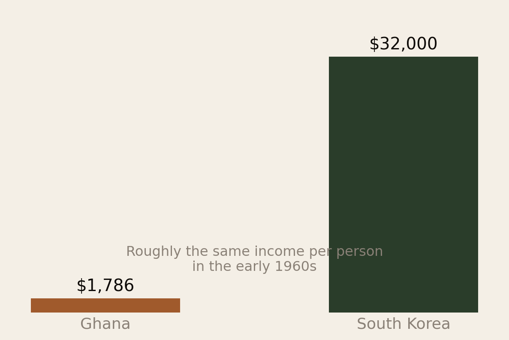
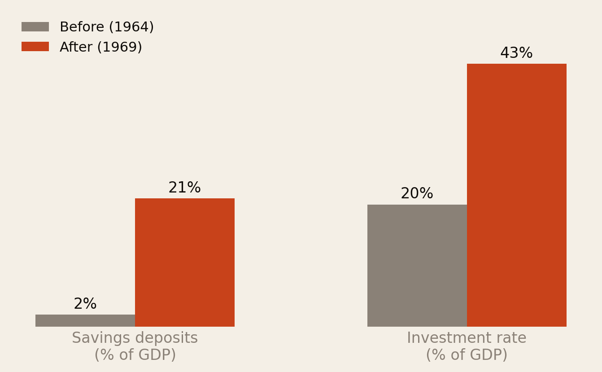
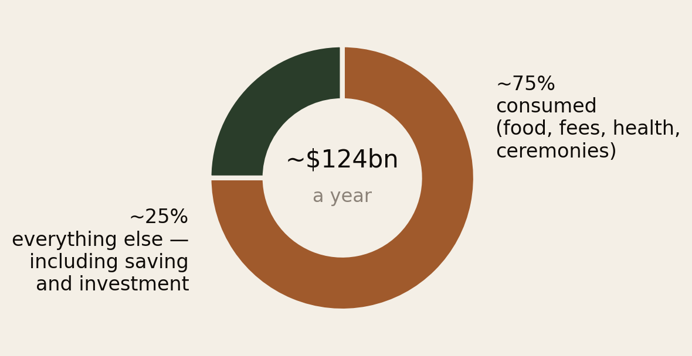

Africa Saves. It Just Doesn’t Compound.
How households save across the continent’s ten largest economies, why the gap persists, and what the diaspora — which already sends home more money than foreign investment and aid combined — can actually do about it.
Section 01Executive Summary
Across Africa’s ten biggest economies — South Africa, Egypt, Algeria, Nigeria, Morocco, Kenya, Ethiopia, Angola, Côte d’Ivoire and Ghana — households save and invest a smaller share of their income than peers in Asia or Latin America, and in several cases barely save at all in formal terms. This is not a story about laziness, poverty alone, or a lack of ambition. It is a story about currency instability that punishes anyone holding savings in local cash, extended-family obligations that route income toward relatives before it reaches a bank account, thin pension systems that leave people improvising retirement through informal networks, and financial systems that — until mobile money arrived — simply were not built to serve most people.
The data bears this out starkly:
- Egypt’s gross domestic savings rate is 1.2% of GDP against an investment rate of 12.9% — almost all capital formation is financed from abroad rather than by Egyptians themselves (World Bank).
- South Africa’s household saving ratio has turned negative — roughly −1.2% of disposable income in late 2024, meaning families as a whole spend more than they earn and finance the gap with debt (SARB via Trading Economics).
- Nigeria’s informal economy averages 56.8% of GDP — the highest of the ten, and the reason most transactions never touch a bank (Medina & Schneider, CESifo WP 7981).
- Only 19.8% of people above retirement age in Sub-Saharan Africa receive any pension, against a 77.5% global average (The Conversation).
- Roughly $100–124 billion a year arrives as remittances — more than foreign direct investment and official aid combined — and about three-quarters of it is spent on food, school fees, medical bills and ceremonies rather than saved or invested (World Bank; RemitSCOPE/IFAD).
Africans save constantly — just not in ways national statistics or banks can see.
Sub-Saharan Africa has the highest rate of saving-for-business in the developing world (23% of adults, and 40% of young Kenyans, per the World Bank’s Global Findex). Households save through rotating clubs — chamas in Kenya, susu in Ghana, esusu/ajo in Nigeria, equb in Ethiopia, gam’iya in Egypt, tontines in Côte d’Ivoire, stokvels in South Africa — through livestock and gold, through land, and above all through the half-built house, bricks bought one paycheck at a time over a decade.
The problem is not that African households lack a savings ethic. It is that their savings are small (because incomes are small), informal (because institutions have repeatedly betrayed them), illiquid and low-yield (a plot of idle land earns nothing for fifteen years), and constantly drained by a kin-obligation system that functions as a private welfare state.
And the picture is not fixed. Botswana turned diamond wealth into one of the world’s fastest sustained growth records. Mauritius went from monocrop sugar to briefly crossing the high-income threshold. Rwanda rebuilt a financial system from a near-standing start. Kenya’s M-Pesa took a country where 4 in 10 adults had no financial access at all and made it one of the most digitally included populations on Earth. Beyond the continent, Korean, Singaporean, Vietnamese and Chinese households — all savers of almost nothing within living memory — now put away 25–35% of their incomes. None of these are accidents.
Section 02The Ten, and the Gap
Ranked by nominal GDP under IMF projections: South Africa ($410B), Egypt ($347B), Algeria ($269B), Nigeria ($188B), Morocco ($166B), Kenya ($132B), Ethiopia ($117B), Angola ($113B), Côte d’Ivoire ($94B) and Ghana ($88B) (IMF WEO April 2025, via africaviewfacts), with Tanzania the borderline eleventh. Together they are roughly two-thirds of the continent’s output, and they span every economic model on it: hydrocarbon exporters (Algeria, Nigeria, Angola), diversified middle-income economies (South Africa, Morocco), a remittance-and-tourism economy (Egypt), a CFA-zone economy with hard-currency stability (Côte d’Ivoire), and fast-growing low-income East African economies (Kenya, Ethiopia).

Two patterns jump out. First, savings rates only look healthy where hydrocarbon export revenue props them up — Algeria at 40.0%, and on an IMF basis Nigeria at 23.8% and Angola at 22.5%. That money belongs to the oil sector and the state, not to families. Strip it out and savings collapse. Egypt’s 1.2% is the extreme case: virtually every pound Egyptians earn is spent, not banked, in the same year it is earned.
A measurement note: “gross domestic savings” excludes remittances and other net transfers from abroad. Broader “gross savings” measures that include Egypt’s $22–23 billion a year in remittances look somewhat higher — but the underlying point stands, because a country whose saving depends on transfers from its emigrants is precisely a country whose resident households save almost nothing.
Second, household consumption swallows most of GDP in the poorer, more informal economies, leaving very little income to convert into savings before any cultural factor is considered.

Section 03Who’s Inside the System
Financial inclusion splits cleanly along a mobile-money line. Kenya and Ghana lead the continent because mobile money reached rural and informal-sector adults that banks never bothered to serve. Algeria and Morocco remain stuck with the bank-branch model of inclusion typical of North Africa.

Pension coverage tells its own story. South Africa’s 68.6% coverage, built on decades of occupational and civil-service schemes, dwarfs Ethiopia’s and Angola’s 0.8% — meaning the overwhelming majority of Ethiopians and Angolans have no formal retirement mechanism at all and must rely entirely on family, land, or informal savings for old age.

Behind both charts sits the informal economy — the single structural fact that keeps households out of savings products. Workers and small businesses operating in cash, without payslips or registered status, are effectively locked out of bank credit and any product requiring documentation or proof of income.

And into these systems flows the diaspora’s money — heavily concentrated in three countries.

Section 04What Households Actually Buy
Across all ten countries, household investment follows a remarkably consistent hierarchy:
- Education first. School fees are the single largest deliberate “investment” outlay for tens of millions of families. Human capital is the preferred asset class.
- Then housing and land — the incremental self-built house; urban plots held for appreciation.
- Then business inventory — stock for the shop or the market stall.
- Then livestock and gold.
- Financial assets last, and only for a thin formal-sector minority — pensions, treasury bills, unit trusts, shares.
Direct stock-market participation is minimal — well under 5% of adults in every top-10 country, versus more than half of American households. The consequence: African household wealth is overwhelmingly illiquid, non-yielding and undiversified. A plot of land earns nothing while waiting. A half-built house cannot pay a hospital bill. A herd can die in a drought.
A savings account with walls is still a savings account. It just pays 0%.
The mirror image of low saving is the consumption basket. Food absorbs 40–60% of household spending in most of these countries — Nigeria among the highest shares in the world — versus roughly 12% in Europe. That alone caps saving capacity. On top of the survival basket sit three culturally loaded outlays:
- Ceremonies. Funerals in Ghana and South Africa, and weddings across the continent, routinely cost months to a year of income.
- Kin transfers. Remittances to villages, school fees for relatives’ children, contributions at every family event.
- Status goods. Imported cars, fashion (including the aso-ebi uniform-cloth economy of Nigerian celebrations), phones and drinks — social signalling and network maintenance in economies where reputation substitutes for credit scores. Data bundles and airtime have joined the list as a major recurring expense.
None of this is irrational at the individual level. All of it compresses what is left for accumulation.
Section 05Ten Country Sketches
South Africa
The best-measured and most paradoxical case: the continent’s most sophisticated financial system — deep pension funds, insurance giants, the JSE — sitting atop a household sector whose saving ratio is around −1.2% of disposable income and whose debt exceeds 60% of disposable income. The middle class saves contractually (payroll pension deductions) while dissaving voluntarily (consumer credit, store cards). Meanwhile an estimated 800,000–820,000 stokvels with roughly 11 million members collectively move R44–50 billion a year — yet only 41% of stokvels are banked at all and just 5% are investment-focused (Ipsos).
Egypt
The extreme consumption economy: household consumption at 93.4% of GDP and gross domestic savings of 1.2%, propped up by $22–23 billion a year in remittances (11.4% of GDP). Households trust gold — Egyptian families are among the world’s biggest retail gold buyers, and jewellery doubles as a woman’s personal reserve — plus real estate and the ubiquitous gam’iya rotating club. Certificates of deposit at state banks attract middle-class money only when rates spike above 20% after each devaluation.
Algeria & Angola
The petrostates: high headline national savings (40.0% and 22.5%) that belong to the hydrocarbon sector and the state, not to families. Only about a third of Algerian adults have an account; Angola has no Findex data since 2014 and 0.8% pension coverage. Households hold cash, dollars, goods, real estate and kin networks. State wealth and household financial fragility coexist — the resource curse at family level.
Nigeria
Africa’s largest informal economy (56.8% of GDP) and most populous nation. Account ownership jumped from 45% of adults in 2021 to roughly 63–64% in 2024, and about 43% of adults now save formally in some amount — a genuine mobile-banking success. But amounts are tiny, only 9% of adults borrow formally, and the naira’s collapse — a 53% depreciation through 2023 and a further 129% year-on-year in 2024, from about 645 to 1,479 per dollar, with inflation at 32% and food inflation at 38% (IMF; Intelpoint) — pushed household wealth into dollars, land and goods. The esusu/ajo/adashe clubs and daily thrift collectors remain the backbone of market-trader saving. One bright spot, detailed in Section 09: the 2004 pension reform has quietly built a ₦31 trillion pool of household retirement savings.
Morocco
The strongest formal household-saving story of the ten: decades of bank-led inclusion, a deep habit of saving for housing supported by state-subsidised loans, life-insurance and pension products (~29–30% coverage), low inflation (0.7%), and heavy, stable remittances from Moroccans in Europe (7.5% of GDP), a large share of which flows into apartments and small businesses back home. Its weakness is the flip side of the bank-branch model: mobile money reaches under 6% of adults, leaving rural and informal households behind.
Kenya
The financial-inclusion champion: 90.1% account ownership, 87.5% via mobile money, and 40% of young adults saving for business — the highest entrepreneurial-saving rate documented anywhere. Chamas number roughly 815,000 with up to 9.8 million members (Aturi Africa) and increasingly graduate from social funds into land-buying companies and stock-market investors. Yet gross domestic savings are only 11.8% of GDP, average balances remain small, digital borrowing has grown as fast as digital saving, and pension coverage is just 10.4%.
Ethiopia
Households save intensively through the equb (rotating club) and iddir (funeral insurance society) — near-universal institutions with written rules and elected officers — plus livestock and bank deposits mobilised by years of state-directed campaigns. But pension coverage is 0.8%, and the birr, after years of managed stability near 30 per dollar, was floated in July 2024 and fell from 57 to over 110 per dollar within ten days. Essentially a 100% devaluation in weeks — vaporising the real value of cash savings and vindicating every family that had kept its wealth in animals and buildings.
Côte d’Ivoire
The CFA-franc counterexample: hard-currency stability (inflation of 0.1%, the lowest of the ten) removes the currency-collapse motive that plagues its Anglophone peers, and gross domestic savings (24.3%) comfortably exceed investment. Mobile money has leapt to 53.4% of adults, and the tontine tradition organises dense community saving. The gaps are institutional depth — pension coverage of just 7.6% — and a large informal economy (38.5% of GDP) that keeps most household saving outside yield-bearing instruments.
Ghana
A high-saving culture repeatedly punished. About 69% of adults save in some form — among the highest participation rates in Africa — and 46% save in an account, built on the centuries-old susu tradition; account ownership has reached 81.2%, with 78.3% via mobile money. Then came 2022–23: inflation above 50% and a domestic-debt restructuring that imposed losses on ordinary bondholders and pension funds. The households that trusted the formal system most were hurt most. Gross domestic savings languish at 12.2% of GDP, household consumption at 83%, and the instinct to hold dollars and cement has been re-taught to a new generation.
Section 06Why — Currency, Kin, Trust
The numbers above are the symptom. The cause is a set of interlocking cultural norms and structural gaps that make saving harder, riskier, or less socially acceptable than it should be. None of it reflects a lack of financial discipline — if anything, the informal systems described in the next section show extraordinary discipline operating despite the formal financial system.
The arithmetic of poverty comes before culture
When income barely covers food, rent, transport and fees, the “savings rate” is not a preference — it is a residual. With household consumption at 77–93% of GDP in Kenya, Ethiopia, Ghana and Egypt, the margin available for accumulation is thin before any cultural factor operates. Korean households in 1960 saved almost nothing either. Household saving everywhere in history rises with income, and the causation runs both ways — which is exactly why breaking the low-income/low-saving loop requires deliberate institutional force rather than moral exhortation.
Currency instability and distrust of formal banking
Chronic currency depreciation is arguably the single biggest rational disincentive to formal savings. Nigeria’s naira lost roughly 53% through 2023 and a further 129% year-on-year in 2024 while inflation hit 32%. Angola’s kwanza fell roughly 39% in 2023 alongside 20% inflation (IMF). Ethiopia’s birr halved in ten days.
When the currency itself is not a reliable store of value, holding foreign currency, livestock, land or gold becomes the economically rational choice over a savings account — a preference then mislabelled as a cultural aversion to banking when it is really a rational response to macroeconomic risk. The famous half-finished African house belongs here too: not poor planning, but a savings account with walls, immune to bank failure, devaluation and currency redesign. Its cost is that household capital sits dead — no yield, no liquidity, no diversification — which is the single biggest difference from Asian households, whose bank savings were lent onward to industry while African household savings sit trapped in concrete.
Institutions earned the distrust the hard way. Ghana’s 2023 domestic-debt restructuring hit ordinary bondholders and pensions. Nigeria’s 2023 note-swap chaos briefly voided families’ cash. Bank failures and frozen accounts scar living memory across the ten. Households therefore trust people over institutions — the susu collector whose reputation is her collateral, the chama whose members can be socially sanctioned, the iddir with its elected elders.
“Black tax”: the family obligation on personal savings
In South Africa and Kenya especially, a meaningful share of what would otherwise be personal savings is instead an ongoing, expected transfer to extended family. South Africa’s Financial Sector Conduct Authority found that 42% of adults had given or lent money to family in the past three months, 73% agreed people have a duty to help family financially, and 62% said helping family is important to their culture — yet only 10% actually planned to depend on family in their own retirement (FSCA Black Tax Briefing Report, 2022). That gap shows people know the obligation costs them long-term security even as they keep honouring it.
It gets worse, not better, with success. Research using South Africa’s National Income Dynamics Study found 30% of Black South African university graduates remit money to family, versus just 13% of non-graduates — and graduates send larger amounts (Whitelaw & Branson, SALDRU WP 270, UCT). Education and career advancement, which should build personal wealth, instead widen the family obligation. Many members of the diaspora will recognise this instantly in their own remittance patterns.
Two things must be said honestly. First, the kin network is a rational and morally serious insurance system — in the absence of public pensions, unemployment cover and health coverage, it is the welfare state, and it is why households survive shocks that would destroy an isolated nuclear family. Paying a nephew’s school fees is human-capital investment with real returns. Second, it taxes individual accumulation at a punishing marginal rate: a visible bank balance is a claimable bank balance, and researchers have documented Africans paying for illiquid or hidden commitment products essentially to be able to say “I don’t have it” truthfully.
Household surplus is channelled into kin consumption and social capital rather than financial capital — not out of foolishness, but into a different, older asset class: relationships.
Status spending is information, not vanity
Where formal credentials, credit bureaus and contract enforcement are weak, visible consumption performs economic work — it signals success, creditworthiness and access, attracting customers, partners and marriage alliances. The Lagos owambe, the Kinshasa sapeur, the Joburg bottle service: advertising budgets in the reputation economy. Colonial history added a layer, coding imported goods as superior — a preference visible today in import-heavy consumption baskets. Korea and Japan in their accumulation decades ran the opposite culture: luxury display was stigmatised, thrift was patriotic, and governments actively suppressed luxury imports. Culture here is policy-sensitive, not fixed.
Weak pensions, and the generational loop
Because state old-age support barely exists, people fall back on family — which reinforces the black-tax dynamic in a loop. Only 19.8% of Sub-Saharan Africans above retirement age receive any pension, versus 77.5% globally, and only 8.9% of the working-age population is covered by any pension plan, against 53.7% globally. High dependency ratios do parallel work: each earner supports many dependents, which mechanically depresses saving — exactly what East Asia looked like before its fertility transition, whose savings boom coincided precisely with falling birth rates. Fertility is now falling meaningfully in Morocco, Egypt, Kenya, Ghana and South Africa, meaning the demographic precondition for a household-savings takeoff arrives over the next two decades.
Financial literacy, product access, and a colonial capital-market legacy
The S&P Global Financial Literacy Survey found risk diversification is the least-understood financial concept worldwide, with women and younger adults scoring lower everywhere (S&P Global FinLit). Access compounds it: roughly half of formal savers in the region earn no interest at all on their balances (Global Findex 2025), and the instruments that compound wealth — money-market funds, index funds, retail bonds — remain concentrated in capital cities. Some of this is historical: research finds colonies where Europeans established permanent institutions went on to develop stronger financial markets than pure extraction zones (Mamadou, 2022). As a scale marker: before the 1990s only eight stock exchanges existed on the entire continent; by 2015 there were 28. The plumbing through which household savings become productive investment is still being built.
Section 07The 17 Million Savings Groups
Where formal banks fail to reach people, informal rotating savings and credit associations fill the gap at enormous scale — an estimated 815,000 chamas with up to 9.8 million members in Kenya alone, and as many as 17.4 million ROSCAs serving 174–209 million members across Sub-Saharan Africa (Aturi Africa). South Africa’s stokvels are the best documented: roughly 800,000–820,000 groups, 11 million members, R44–50 billion a year.
This is genuine, disciplined saving. But it happens almost entirely outside the formal system: only 41% of stokvels are banked, just 5% are investment-focused, and many keep pooled cash in zero-interest accounts or literal cash boxes. Across Sub-Saharan Africa, Findex data shows 54% of adults save in a given year — but only about a quarter of those savers use a formal method (World Bank Findex SSA note).
People choose these groups because they require no collateral or credit history and enforce social accountability. The cost: they pay no interest, cap group size at 10–15 members, and offer zero protection if someone absconds with the pot.
A chama that holds treasury bills and index funds is a household wealth machine. One that holds cash in a box is an inflation victim.
Section 08Countries That Broke the Pattern
The same continent that produces these numbers has also produced some of the most dramatic turnarounds in modern economic history — and beyond Africa, every high-saving household culture on earth is recent and was built, not inherited. What separates the turnarounds is rarely luck.
Botswana vs. Zambia and the DRC: same resource wealth, opposite outcomes
At independence in 1966, Botswana was one of the poorest countries on Earth. Diamonds, discovered shortly after, now account for roughly 80% of exports and a quarter of GDP — yet instead of simply spending the windfall, Botswana negotiated an unusually strong deal with De Beers, securing about 85% of diamond-mining profits for the state plus board seats and a direct equity stake in De Beers itself (IMF PFM Blog). It then imposed a self-binding fiscal rule — the Sustainable Budget Index — restricting mineral revenue to funding only genuine investment, and channelled surpluses into the Pula Fund, a sovereign wealth fund managed by the central bank since the mid-1990s. The result: average annual growth of 7.8% since the 1980s, and households spared the inflation and default traumas of their neighbours.
Compare Zambia, the world’s ninth-largest copper producer, where poverty rose from 54% in 2015 to 60% in 2022 (The Conversation), or the DRC, whose mineral endowment is valued at an estimated $24 trillion while 71% of its population lives in extreme poverty. The difference is not the resource. It is whether a country builds the fiscal discipline and negotiating leverage to convert rents into broad, lasting investment instead of short-term consumption or elite capture.
Mauritius: from sugar monoculture to a diversified investment hub
At independence in 1968, Mauritius was almost entirely dependent on sugar (roughly 30% of GDP and 90% of exports), unemployment stood near 20%, and its own 1961 government-commissioned Meade Report predicted inevitable decline (UNCTAD). Roughly fifty years later it briefly crossed the World Bank’s high-income threshold in 2019 with GNI per capita of $10,230 — a more than forty-fold nominal increase.
The transformation happened in stages that shared one theme: reinvesting each sector’s surplus into the next one. Sugar export-tax revenue in the 1970s financed Export Processing Zones that created over 14,000 jobs across 34 factories within three years. A 1980s balance-of-payments crisis was met with devaluation and continued export orientation rather than protectionist retreat. By the early 2020s an offshore financial centre supported 190 management companies, 19 banks and over 1,000 global investment funds. Mauritian household savings behaviour now sits closer to Malaysia’s than to the African mainland’s.
Rwanda: rapid inclusion, but savings still lag
Rwanda’s post-1994 recovery is one of the fastest reconstructions in modern economic history: GDP per capita (PPP) rose from about $1,016 in 2000 to $3,060 in 2023, and poverty fell from 59% in 2001 to 27.4% by 2023/24 (NISR EICV7). The Umurenge SACCO programme — a savings and credit cooperative in every one of Rwanda’s 416 sectors — multiplied the number of banked Rwandans fivefold within three years of its 2008 launch, and formal financial usage doubled from 21% in 2008 to 42% in 2012 (World Bank).
But — the lesson worth underlining — inclusion has not automatically produced high savings. Rwanda’s domestic savings rate stood at only 10.5% of GDP as of 2021, well below its 26% investment rate, and Vision 2050 explicitly targets raising national savings only to 22.4% by 2035. That is the government’s own acknowledgment that a bank account is necessary but not sufficient: people also need income surplus, trust, and a reason to leave money in the account.
Ghana vs. South Korea: the classic savings-led divergence
Ghana and South Korea are the textbook comparison: both had per-capita incomes in the same rough range in the early 1960s.

The decisive difference was South Korea’s 1965 interest-rate reform, which raised the ceiling on bank deposit rates from 15% to 30%, making it suddenly worthwhile to keep money in a bank instead of under a mattress.

Around the reform, the state re-engineered household life: luxury imports restricted and conspicuous consumption socially shamed, national thrift campaigns with savings passbooks in schools, stable prices making the won worth holding. The kye — Korea’s rotating savings club, functionally identical to the susu or chama — did not disappear; it was gradually absorbed as banks became more trustworthy than neighbours. By 1997 the thrift culture had become identity: households queued to donate personal gold to the nation during the Asian crisis.
Ghana, by contrast, pursued state-led import substitution far longer without a comparable financial-sector reform, and macroeconomic instability further discouraged formal saving. The uncomfortable, liberating lesson: it is entirely possible to start at the same line as South Korea and end up somewhere completely different — and interest-rate and financial-sector policy, not culture or geography or luck, did most of the work.
Singapore, Vietnam and China: households remade in a generation
Singapore skipped persuasion and legislated household saving: from 1955 the Central Provident Fund compulsorily deducted large fractions of every wage — combined employer-employee rates at times exceeded 40% — into personal accounts usable for housing, health and retirement. A generation who had lived in slums became, through their own locked savings, owners of public flats (home ownership ~90%). Households did not choose to become savers; the paycheck chose for them, and pride of ownership did the cultural work afterwards.
Chinese and Vietnamese rural households — poorer than most African households today in 1980 and 1990 respectively — became the world’s champion savers (25–35%+ of income) within twenty years of three changes: land reform gave farm families a surplus of their own to keep; ending high inflation made the currency worth holding; and factory wages turned subsistence households into cash-income households with something left over each month. Vietnam is the closest mirror for Ghanaian, Kenyan or Ivorian households today.
Kenya’s M-Pesa: proof that access alone is not the finish line
Before M-Pesa launched in March 2007, only 26.7% of Kenyan adults had access to any formal financial service and 41.3% had none at all (NBER WP 17129). By 2024, account ownership had reached 90.1% — arguably the single most successful financial-inclusion transformation on the continent.
But the nuance matters just as much: Findex data shows the share of Kenyans saving any money stayed flat around 70% between 2017 and 2021. Mobile money changed how people save and transact, not necessarily how much. The World Bank’s own early case study found M-Pesa’s average account balance in 2009 was just $2.70 — a payments rail, not a savings vehicle, in its first years (World Bank M-PESA case study). Digital access is a necessary foundation; converting access into wealth requires products designed for saving and investing.
The recipe, at household level, in every case: stable money worth saving; an instrument that is automatic or compulsory; a reachable reward that makes locking money acceptable; jobs that turn subsistence into surplus; and a public narrative that made the saver, not the spender, the admired figure. Household culture followed institutions with a lag of about one generation — every time.
Section 09What Can Actually Change This
For governments, the sequence matters. Nothing else works without stable prices and a currency worth holding — Korea’s savings boom began with an interest-rate reform, Vietnam’s the year hyperinflation died, and no financial-literacy campaign can outrun 30% inflation. Côte d’Ivoire’s CFA stability shows the difference within this very top 10. Next comes restoring trust with skin in the game: deposit insurance (South Africa’s new scheme is the regional model), inflation-indexed retail savings bonds in small denominations, and — after Ghana’s default — an ironclad norm that small savers and pensions are senior in any restructuring. Then the proven instruments:
- Pension reform mobilises enormous pools of long-term household capital. Nigeria’s 2004 Contributory Pension Scheme replaced an unfunded public system with individually owned retirement accounts. Assets grew from ₦47 billion in 2004 to ₦31.48 trillion by mid-2026, with over 70% deployed into domestic capital markets (PENOP; The Fact NG). Extending micro-pensions to the informal majority is the next frontier — with partial withdrawal rights for housing and health, so lock-in feels safe rather than confiscatory.
- Formalising ROSCAs into regulated SACCOs, as Rwanda did nationally through Umurenge, converts already-organised, already-trusted informal savings into interest-bearing, better-protected formal savings — while keeping the social trust mechanisms that make ROSCAs popular.
- Mobile money-linked savings products — Kenya’s M-Shwari (9.2 million savings accounts by end-2014) and M-Akiba (the world’s first mobile-based retail government bond) — show digital rails can carry real savings products, not just payments. M-Akiba’s rocky launch (only 2% of registered users subscribed) also shows trust and product design must be earned. Sweeping idle wallet balances into interest-bearing money-market funds, given that roughly half of the region’s formal savers currently earn nothing, would make tens of millions of households investors overnight.
- Digital investment platforms — Chaka/Hisa, Bamboo, Trove, Risevest, Cowrywise, PiggyVest and others — now give retail savers app-based access to stocks, ETFs and money-market funds, several with remote account opening usable from abroad (African Business).
- Diaspora bonds let governments borrow directly from citizens abroad, turning one-way remittance spending into a return-bearing relationship. Kenya, Nigeria, Ethiopia, Ghana and Rwanda have issued them, but together they have reached only about 4 million of Africa’s roughly 34.4 million-strong diaspora — about 12% penetration (CIGI; AfDB). Nigeria’s 2017 $300 million diaspora bond, listed in the UK and US at a 5.625% coupon, was fully redeemed on schedule in 2022 — proof the model works when executed well. Israel has raised tens of billions this way since 1951.
Communities and families can renegotiate the social contract without dismantling the kin system: churches and chieftaincies capping funeral and wedding expenditure (several Ghanaian traditional councils have moved this way); families converting open-ended cash support into targeted transfers — fees paid to the school, inputs to the farm, a jointly titled plot, shares in a family business with actual bookkeeping; savings groups adopting written constitutions, elected auditors and bank custody; and normalising the commitment device, making it culturally legitimate to say “my money is locked.”
Section 10A Playbook for the Diaspora
For Africans living abroad, the throughline of this research is that the same money already being sent home can, with a shift in structure rather than amount, become an investment relationship instead of a purely consumption transfer.

Why you, honestly
First, you already fund the households. Remittances to Africa passed $100 billion a year — over $124 billion in 2025 — bigger than FDI and roughly twice all development aid, landing directly inside household budgets: around $25 billion a year into Nigerian homes, around $23 billion into Egyptian ones, billions more into Ghanaian, Kenyan, Moroccan and Senegalese ones. Panel studies of Sub-Saharan Africa find remittances over the long run boost consumption while doing little for — and sometimes crowding out — investment, partly because reliable transfers can substitute for the family building its own assets (ScienceDirect).
Second, you decide at the margin. The choice of whether next month’s $200 becomes dinner or capital is made in Houston, London, Paris and Toronto. No government controls it.
Third, you are the demonstration effect. Diasporas transmitted the accumulation ethic to Korea, China and India. No one else combines hard currency immune to local inflation, unbreakable motivation, and standing inside the household where the saving decision is actually made.
The playbook
- Split remittances deliberately. Treat a portion — even 10–20% — as a dedicated “investment tranche” (into a family member’s retirement or SACCO account, a diaspora bond, or a digital brokerage account in their name), separate from the consumption tranche covering school fees, medical bills and ceremonies. This does not require sending less money. It requires labelling and structuring a portion of it differently.
- Buy diaspora bonds directly where available (Kenya, Nigeria, Ethiopia, Ghana, Rwanda) — a fixed-income instrument that funds national infrastructure and pays a coupon back to you, rather than a one-way gift. And be part of a diaspora that collectively demands honest instruments, enforceable titles and small-saver protections before committing capital, pushing exactly the reforms that make it safe for the family at home to save too.
- Open remote accounts on regulated digital brokerages (Chaka/Hisa, Trove, Risevest, Cowrywise, Bamboo) to hold dollar- or home-currency-denominated stocks, ETFs or money-market funds tied to home markets.
- Route family support through SACCOs, pension accounts or direct payments rather than cash where possible — fees to the school, materials to the builder, a micro-pension contribution for your parents, a mortgage instead of decade-long incremental building (formal housing finance turns the dead-capital house into a titled, insurable asset). Matched saving — “for every cedi you save, I add one” — consistently outperforms lecturing.
- Use currency-hedged or dollar-linked instruments when saving in high-inflation countries (Nigeria, Ethiopia, Angola, Ghana, Egypt), since currency instability — not culture — is a primary driver of low formal savings. And channel through formal rails: money that arrives informally stays invisible to the financial system and can never compound.
- Support financial literacy in the family, and pool with other diasporans. The most consistently cited barrier is not lack of income but lack of comfort with formal financial products — and diaspora members are often the most financially literate node in an extended family network. Diaspora investment clubs, the chama logic at hard-currency scale, can finance rental units, clinics and agribusiness that individual senders cannot.
Section 11Conclusion
African households in the continent’s ten biggest economies are not non-savers. They are savers whose savings are small, hidden, illiquid and leaking. The susu, chama, equb, stokvel, esusu, gam’iya and tontine — the 17 million ROSCAs serving perhaps 200 million members — are proof of one of the world’s strongest indigenous thrift traditions, operating in an environment of low incomes, treacherous currencies, institutions that have repeatedly betrayed savers, kin-based wealth taxation, near-absent pensions, and reputation economies that reward display.
The deeper lesson across Botswana, Mauritius, Rwanda, South Korea, Singapore, Vietnam and Kenya is the same: the gap between societies that build lasting wealth and those that do not is not really about culture, resources or starting income. It is about the institutions, incentives and trust structures that determine what happens to the money people already have — and household culture reorganises itself around new institutions within about a generation, every time.
Your $100+ billion a year is already inside the continent’s kitchens. The task of this generation — on both sides of the transfer — is to make sure it also reaches the balance sheet.
Sources & method
All statistics are linked inline. Principal sources: World Bank World Development Indicators and Global Findex Database (2021 and 2025); IMF Article IV reports and working papers; IFAD/RemitSCOPE Africa; Medina & Schneider (CESifo WP 7981) on informal economies; World Bank “Pension Patterns in Sub-Saharan Africa”; FSCA Black Tax Briefing Report (2022); SALDRU WP 270 (UCT); Ipsos stokvel research; Aturi Africa ROSCA white paper; NBER WP 17129 on M-Pesa; UNCTAD on Mauritius; IMF and Rwandan government publications on Botswana and Rwanda; PENOP and Nigeria DMO on pension reform and diaspora bonds; CIGI and AfDB on diaspora bonds; African Business and WeeTracker on digital investment platforms; and panel studies on remittances, consumption and investment.
Figures are indicative. National-accounts and survey data vary by year and methodology, and savings measures in particular differ depending on whether transfers from abroad are included. Where sources conflict, the report uses the more conservative figure and says so.
The diaspora helps the diaspora.
Africa Global Forum is a peer network for Africans abroad — help each other, sit together, and bounce ideas. The research above is part of an open library. The Forum itself is by application.